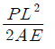
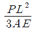
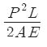
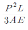
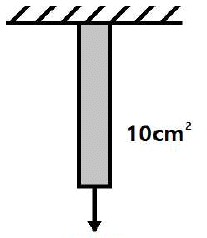
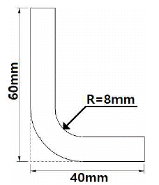
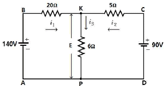

항공산업기사 (2017-03-05 기출문제)
1과목: 항공역학
1. 비행기의 최대양력계수가 커질수록 이와 관계된 비행성능의 변화에 대한 설명으로 옳은 것은?
- 상승속도가 크고 착륙속도도 커진다.
- 상승속도는 작고 착륙속도는 커진다.
- 선회반경이 크고 착륙속도는 작아진다.
- 실속속도가 작아지고 착륙속도도 작아진다.
(정답률: 62%)

2. 프로펠러 항공기의 항속거리를 최대로 하기 위한 조건으로 옳은 것은?(단, CDp는 유해항력계수, CDi는 유도항력계수이다.)
- CDp = CDi
- CDp = 2CDi
- CDp = 3CDi
- 3CDp = CDi
(정답률: 81%)
3. 무게 2000kgf의 비행기가 5km 상공에서 급강하할 때 종극속도는 약 몇 m/s인가?(단, 항력계수 0.03, 날개하중 300kgf/m2, 공기의밀도 0.075kgf·s2/m4이다.)
- 350
- 516.4
- 620
- 771.5
(정답률: 73%)
4. 전진비행 중인 헬리콥터의 진행방향 변경은 어떻게 이루어지는가?
- 꼬리 회전날개를 경사시킨다.
- 꼬리 회전날개의 회전수를 변경시킨다.
- 주 회전날개깃의 피치각을 변경시킨다.
- 주 회전날개 회전면을 원하는 방향으로 경사시킨다.
(정답률: 76%)
5. 다음 중 항공기의 양력(lift)에 영향을 가장 적게 미치는 요소는?
- 양력계수
- 공기 밀도
- 항공기 속도
- 공기 점성
(정답률: 81%)
6. 날개의 양력분포가 타원 모양이고 양력계수가 1.2, 가로세로비가 6일 때 유도항력계수는 약 얼마인가?
- 0.012
- 0.076
- 1.012
- 1.076
(정답률: 78%)
7. 수직충격파 전후의 유동특성으로 틀린 것은?
- 충격파를 통과하는 흐름은 등엔트로피 흐름이다.
- 수직충격파 뒤의 속도는 항상 아음속이다.
- 충격파를 통과하게 되면 급격한 압력상승이 일어난다.
- 충격파는 실제적으로 압력의 불연속면이라 볼수 있다.
(정답률: 56%)
8. 항공기의 착륙거리를 줄이기 위한 방법이 아닌 것은?
- 추력을 크게 한다.
- 익면하중을 작게 한다.
- 역추력장치를 사용한다.
- 지면 마찰계수를 크게 한다.
(정답률: 79%)
9. 해면상 표준대기에서 정압(static pressure)의 값으로 틀린 것은?
- 0 kg/m2
- 2116.2 lb/ft2
- 29.92 inHg
- 1013.25 mbar
(정답률: 84%)
10. 비행기의 세로안정을 좋게 하기 위한 방법이 아닌 것은?
- 수직꼬리날개의 면적을 증가시킨다.
- 수평꼬리날개 부피계수를 증가시킨다.
- 무게중심이 날개의 공기역학적 중심 앞에 위치 하도록 한다.
- 무게중심에 관한 피칭모멘트계수가 받음각이 증가함에 따라 음(-)의 값을 갖도록 한다.
(정답률: 60%)
11. 직사각형 날개의 가로세로비를 나타낸 식으로 틀린 것은? (단, b : 날개의 길이, c : 날개의 시위, s : 날개의 면적이다.)
- b/c
- b2/s
- s/c2
- c2/s
(정답률: 74%)
12. 무게 4000kgf인 항공기가 선회경사각 60°로 경사선회하며 하중계수 1.5가 작용한다면 이 항공기의 양력은 몇 kgf인가?
- 2000
- 4000
- 6000
- 8000
(정답률: 55%)
13. 항공기의 조종성과 안정성에 대한 설명으로 옳은 것은?
- 전투기는 안정성이 커야 한다.
- 안정성이 커지면 조종성이 나빠진다.
- 조종성이란 평형상태로 되돌아오는 정도를 의미한다.
- 여객기의 경우 비행성능을 좋게 하기 위해 조종성에 중점을 두어 설계해야 한다.
(정답률: 89%)
14. 조종면에 발생되는 힌지 모멘트가 증가되는 경우로 옳은 것은?
- 조종면의 폭을 키운다.
- 비행기의 속도를 줄인다.
- 항공기 주 날개의 무게를 늘린다.
- 조종면의 평균 시위를 최대한 작게 한다.
(정답률: 78%)
15. 비행기의 수직꼬리날개 앞 동체에 붙어 있는 도살핀(dorsal fin)의 가장 중요한 역할은?
- 구조 강도를 좋게 한다.
- 가로 안정성을 좋게 한다.
- 방향 안정성을 좋게 한다.
- 세로 안정성을 좋게 한다.
(정답률: 85%)
16. 100m/s로 비행하는 프로펠러 항공기에서 프로펠러를 통과하는 순간의 공기 속도가 120m/s가되었다면 이 항공기의 프로펠러 효율은 약 얼마인가?
- 0.76
- 0.83
- 0.91
- 0.97
(정답률: 73%)
17. 항공기 사고의 원인이 되기도 하는 스핀(spin)이 일어날 수 있는 조건으로 가장 옳은 것은?
- 기관이 멈추었을 때
- 받음각이 실속각보다 클 때
- 한쪽 날개 플랩이 작동하지 않을 때
- 항공기 착륙장치가 작동하지 않을 때
(정답률: 72%)
18. 프로펠러의 깃각을 감소시키려는 경향을 갖는 요소로 옳은 것은?
- 추력에 의한 굽힘모멘트
- 회전력에 의한 굽힘모멘트
- 원심력에 의한 비틀림모멘트
- 공기력에 의한 비틀림모멘트
(정답률: 61%)
19. 특정한 헬리콥터에서 회전날개(rotor blades)에 비틀림 각을 주는 주된 이유는?
- 회전날개의 무게를 경감하기 위하여
- 회전날개의 회전속도를 증가시키기 위하여
- 전진비행에서 발생하는 진동을 줄이기 위하여
- 정지비행 시 균일한 유도속도의 분포를 얻기 위하여
(정답률: 72%)
20. 전리층이 존재하기 때문에 전파를 흡수, 반사하는 작용을 하여 통신에 영향을 주는 대기층은?
- 대류권
- 열권
- 중간권
- 성층권
(정답률: 80%)
2과목: 항공기관
21. 왕복엔진을 장착하는 동안 마그네토 점화스위치를 Off 위치에 두는 이유는?
- 점화스위치가 잘못 놓일 수 있는 가능성 때문에
- 엔진장착 도중에 프로펠러를 돌리면 엔진이 시동될 가능성이 있기 때문에
- 엔진시동 시 역화(back fire)를 방지하기 위하여
- 엔진을 마운트(mount)에 완전히 장착시킨 후 마그네토 접지선을 점검치 않기 위하여
(정답률: 83%)
22. 가스터빈엔진의 터빈에서 공기압력과 속도의 변화에 대한 설명으로 옳은 것은?
- 압력과 속도 모두 감소한다.
- 압력과 속도 모두 증가한다.
- 압력은 증가하고 속도는 감소한다.
- 압력은 감소하고 속도는 증가한다.
(정답률: 69%)
23. 왕복엔진에 장착된 피스톤 링(piston ring)의 역할이 아닌 것은?
- 피스톤의 진동에 의한 경화현상을 방지하는 기능
- 윤활유가 연소실로 유입되는 것을 방지하는 기능
- 연소실 내의 압력을 유지하기 위한 밀폐기능
- 피스톤으로부터 실린더벽으로 열을 전도하는 기능
(정답률: 62%)
24. 비행 중 엔진고장 시 프로펠러를 페더링(feathering) 시켜야 하는 이유로 옳은 것은?
- 엔진의 진동을 유발해 화재를 방지하기 위하여
- 풍차(windmill) 효과로 인해 추력을 얻기 위하여
- 프로펠러 회전을 멈춰 추가적인 손상을 방지하기 위하여
- 전면과 후면의 차압으로 프로펠러를 회전시키기 위하여
(정답률: 77%)
25. 초기압력과 체적이 각각1000N/cm2,1000cm3인 이상기체가 등온상태로 팽창하여 체적이 2000cm3이 되었다면, 이 때 기체의 엔탈피 변화는 몇 J인가?
- 0
- 5
- 10
- 20
(정답률: 54%)
26. 회전동력을 이용하여 프로펠러를 움직여 추진력을 얻는 엔진으로만 짝지어진 것은?
- 터보프롭 - 터보팬
- 터보샤프트 - 터보팬
- 터보샤프트 - 터보제트
- 터보프롭 - 터보샤프트
(정답률: 75%)
27. 비가역 과정에서의 엔트로피 증가 및 에너지 전달의 방향성에 대한 이론을 확립한 법칙은?
- 열역학 제0법칙
- 열역학 제1법칙
- 열역학 제2법칙
- 열역학 제3법칙
(정답률: 75%)
28. 터빈엔진(turbine engine)의 윤활유(lubrication oil)의 구비조건이 아닌 것은?
- 인화점이 낮을 것
- 점도지수가 클 것
- 부식성이 없을 것
- 산화 안정성이 높을 것
(정답률: 76%)
29. 엔진의 오일탱크가 별도로 장치되어 있지 않고 스플래쉬(splash) 방식에 의해 윤활되는 오일계통을 무엇이라 하는가?
- Hot Tank System
- Wet Sump System
- Cold Tank System
- Dry Sump System
(정답률: 65%)
30. 다음 중 초음속 전투기 엔진에 사용되는 수축-확산형 가변배기 노즐(VEN)의 출구면적이 가장 큰 작동상태는?
- 전투추력(military thrust)
- 순항추력(cruising thrust)
- 중간추력(intermediate thrust)
- 후기연소추력(afterburning thrust)
(정답률: 73%)
31. [보기]에 나열된 왕복엔진의 종류는 어떤 특성으로 분류한 것인가?
- 엔진의 크기
- 엔진의 장착 위치
- 실린더의 회전 형태
- 실린더의 배열 형태
(정답률: 89%)
32. 왕복엔진 기화기의 혼합기 조절장치(mixture control system)에 대한 설명으로 틀린 것은?
- 고도에 따라 변하는 압력을 감지하여 점화시기를 조절한다.
- 고고도에서 혼합기가 너무 농후해지는 것을 방지한다.
- 고고도에서 기압, 밀도, 온도가 감소하는 것을 보상하기 위해 사용된다.
- 실린더가 과열되지 않는 출력 범위 내에서 희박한 혼합기를 사용하게 함으로써 연료를 절약한다.
(정답률: 51%)
33. 2차 공기유량이 16500 lb/s이고 1차 공기유량이 3000 lb/s인 터보팬엔진에서 바이패스비는?
- 6.3 : 1
- 5.5 : 1
- 4.3 : 1
- 3.7 : 1
(정답률: 84%)
34. 비행 중 프로펠러에 작용하는 힘의 종류가 아닌 것은?
- 원심력
- 추력
- 구심력
- 비틀림힘
(정답률: 70%)
35. 왕복엔진 배기밸브(exhaust valve)의 냉각을 위해 밸브 속에 넣는 물질은?
- 스텔라이트
- 취화물
- 금속나트륨
- 아닐린
(정답률: 84%)
36. 압축비가 8인 오토사이클의 열효율은 약 얼마인가?(단, 공기 비열비는 1.5이다.)
- 0.52
- 0.56
- 0.58
- 0.64
(정답률: 48%)
37. 왕복엔진에서 저압점화계통을 사용할 때 단점은?
- 캐패시턴스
- 무게의 증대
- 플래시 오버
- 고전압 코로나
(정답률: 68%)
38. 가스터빈엔진에서 가스 발생기(gasgenerator)를 나열한 것은?
- Compressor, Combustion chamber,Turbine
- Compressor, Combustion chamber,diffuser
- Inlet duct, Combustion chamber, diffuser
- Compressor, Combustion chamber,Exhaust
(정답률: 75%)
39. 가스터빈엔진에서 연료계통의 여압 및 드레인밸브(P&D valve)의 기능이 아닌 것은?
- 일정 압력까지 연료흐름을 차단한다.
- 1차 연료와 2차 연료흐름으로 분리한다.
- 연료 압력이 규정치 이상 넘지 않도록 조절한다.
- 엔진정지 시 노즐에 남은 연료를 외부로 방출한다.
(정답률: 57%)
40. 가스터빈엔진의 시동 시 정상작동 여부를 판단하는데 중요한 계기는?
- 오일압력계기, 연소실 압력계기
- 오일압력계기, 배기가스온도계기
- 오일압력계기, 압축기입구 공기온도계기
- 오일압력계기, 압축기입구 공기압력계기
(정답률: 72%)
3과목: 항공기체
41. 항공기에서 복합재료를 사용하는 주된 이유는?
- 무게 당 강도가 높다.
- 재료를 구하기가 쉽다.
- 재질 표면에 착색이 쉽다.
- 재료의 가공 및 취급이 쉽다.
(정답률: 84%)
42. 밀착된 구성품 사이에 작은 진폭의 상대운동이 일어날 때 발생하는 제한된 형태의 부식은?
- 점(pitting)부식
- 피로(fatigue)부식
- 찰과(fretting)부식
- 이질금속간(galvanic)부식
(정답률: 75%)
43. NAS 514 P 428 - 8 스크류에서 P가 의미하는 것은?
- 재질
- 나사계열
- 길이
- 머리의 홈
(정답률: 62%)
44. 탄성을 가진 고분자 물질인 합성고무가 아닌 것은?
- 부틸
- 부나
- 에폭시
- 실리콘
(정답률: 74%)
45. 단면적이 A이고, 길이가 L이며 탄성계수가 E인 부재에 인장하중 P가 작용하였을 때, 이 부재에 저장되는 탄성에너지로 옳은 것은?




(정답률: 58%)
46. 구조재료에 발생하는 현상에 대한 설명으로 틀린 것은?
- 반복하중에 의하여 재료의 저항력이 증가하는 현상을 피로라 한다.
- 일정한 응력을 받는 재료가 일정한 온도에서 시간이 경과함에 따라 하중이 일정하더라도 변형률이 변하는 현상을 크리프라 한다.
- 노치, 작은 구멍, 키, 홈 등과 같이 단면적의 급격한 변화가 있는 부분에 대단히 큰 응력이 발생하는 현상을 응력집중이라 한다.
- 축방향의 압축력을 받는 부재 중 기둥이 압축하중에 의해 파괴되지 않고 휘어지면서 파단되어 더이상 하중에 견디지 못하게 되는 현상을 좌굴이라 한다.
(정답률: 65%)
47. 트러스(truss)구조형식의 항공기에 없는 부재는?
- 리브(rib)
- 장선(brace wire)
- 스파(spar)
- 스트링거(stringer)
(정답률: 53%)
48. 조종간의 조종력을 케이블이나 푸시풀로드를 대신하여 전기, 전자적으로 변환된 신호상태로 조종면의 유압작동기를 움직이도록 전달하는 장치는?
- 트림 시스템(trim system)
- 인공감지장치(artificial feel system)
- 플라이 바이 와이어 장치(fly by wire system)
- 부스터 조종장치(booster control system)
(정답률: 86%)
49. 그림과 같이 단면의 면적이 10cm2의 원형 강봉에 40kN의 인장하중이 작용하는 경우, 축의 수직인 면에 발생하는 수직응력은 약 몇 MPa인가?

- 40
- 50
- 60
- 70
(정답률: 75%)
50. 셀프락킹 너트(self locking nut) 사용에 대한설명으로 틀린 것은?
- 규정토크 값에 락킹토크 값을 더한 값을 적용한다.
- 볼트에 장착했을 때 너트면 보다 2산 이상의 나사산이 나와 있어야 한다.
- 볼트 지름이 1/4인치 이하이며 코터핀 구멍이 있는 볼트에는 사용할 수 없다.
- 회전부분의 너트가 연결부를 이루는 곳에 주로사용된다.
(정답률: 55%)
51. 폭이 20cm, 두께가 2mm인 알루미늄판을 그림과 같이 직각으로 굽히려 할 때 필요한 알루미늄판의 세트백(set back)은 몇 mm인가?

- 8
- 10
- 12
- 14
(정답률: 71%)
52. 2차원의 구조물에 미치는 힘을 해석할 때 정역학의 평형방정식(ΣF=0, ΣM=0)은 총 몇 개가 되는가?
- 1
- 2
- 3
- 6
(정답률: 63%)
53. 기체 구조의 고유진동수와 일치하는 진동수를 가지는 외부하중이 부가되면 하중의 크기가 아주크지 않더라도 파괴가 일어날 수 있는 현상을 무엇이라 하는가?
- 피로
- 공진
- 크리프
- 항복
(정답률: 71%)
54. 안티스키드(anti-skid) 기능 중 착륙 시 바퀴가 지면에 닿기 전에 조종사가 브레이크를 밟더라도 제동력이 발생하지 않도록 하여 착륙장치에 무리한 힘이 가해지지 않도록 하는 기능은?
- 페일 세이프 보호(fail safe protection)
- 터치다운 보호(touch down protection)
- 정상 스키드 컨트롤(normal skid control)
- 락크된 휠 스키드 컨트롤(locked wheel skidcontrol)
(정답률: 70%)
55. 항공기의 자세 조종에 사용되는 1차 조종면으로 나열된 것은?
- 승강타, 방향타, 플랩
- 도움날개, 승강타, 방향타
- 도움날개, 스포일러, 플랩
- 도움날개, 방향타, 스포일러
(정답률: 85%)
56. 세미모노코크구조에서 동체가 비틀림에 의해 변형되는 것을 방지해 주며 날개, 착륙장치 등의 장착부위로 사용되기도 하는 부재는?
- 프레임(frame)
- 세로대(longeron)
- 스트링거(stringer)
- 벌크헤드(bulkhead)
(정답률: 62%)
57. 올레오 스트러트(oleo strut) 착륙장치의 구성품 중 토크링크(torque link)에 대한 설명으로 틀린 것은?
- 휠 얼라인먼트를 바르게 한다.
- 피스톤의 과도한 신장을 제한한다.
- 피스톤과 실린더의 회전을 방지한다.
- 올레오 스트러트의 전, 후 행정을 제한한다.
(정답률: 52%)
58. 리벳 작업에 대한 설명으로 옳은 것은?
- 리벳의 최소 연거리는 리벳지름의 2배 정도이다.
- 리벳의 피치는 열과 열사이의 거리이다.
- 리벳의 지름은 접합할 판재 중 제일 두꺼운 판재두께의 2배 정도가 적당하다.
- 리벳의 열은 판재의 인장력을 받는 방향으로 배열된 리벳의 집합이다.
(정답률: 49%)
59. AN 표준규격 재료기호 2024(DD) 리벳을 상온에 노출되고 10분 이내에 리벳팅을 해야 하는 이유는?
- 시효경화가 되기 때문에
- 부식이 시작되기 때문에
- 시효경화가 멈추기 때문에
- 열팽창으로 지름이 커지기 때문에
(정답률: 82%)
60. 경비행기의 방화벽(fire wall) 재료로 사용되는 18-8 스테인리스강(stainless steel)에 대한 설명으로 옳은 것은?
- Cr-Mo 강으로서 열에 강하다.
- 18% Cr과 8% Ni를 갖는 내식강이다.
- 1.8%의 탄소와 8%의 Cr를 갖는 특수강이다.
- 1.8%의 Cr과 0.8%의 Ni를 갖는 내식강이다.
(정답률: 69%)
4과목: 항공장비
61. 산소계통에서 산소가 흐르는 방식의 종류가 아닌 것은?
- 희석 유량형
- 압력형
- 연속 유량형
- 요구 유량형
(정답률: 60%)
62. 니켈-카드뮴 축전지의 특성에 대한 설명으로 옳은 것은?
- 양극은 카드뮴이고 음극은 수산화니켈이다.
- 방전 시 수분이 증발되므로 물을 보충해야 한다.
- 충전 시 음극에서 산소가 발생되고, 양극에서 수소가 발생된다.
- 전해액은 KOH이며 셀당 전압은 약 1.2~1.25V정도이다.
(정답률: 71%)
63. 항공기에 사용되는 유압계통의 특징이 아닌 것은?
- 리저버와 리턴라인이 필요 없다.
- 단위중량에 비해 큰 힘을 얻는다.
- 과부하에 대해서도 안전성이 높다.
- 운동속도의 조절범위가 크고 무단변속을 할 수 있다.
(정답률: 74%)
64. 다용도 측정기기 멀티미터(multimeter)를 이용하여 전압, 전류 및 저항측정 시 주의사항으로 틀린 것은?
- 전류계는 측정하고자 하는 회로에 직렬로, 전압계는 병렬로 연결한다.
- 저항계는 전원이 연결되어 있는 회로에 사용해서는 절대 안 된다.
- 저항이 큰 회로에 전압계를 사용할 때는 저항이작은 전압계를 사용하여 계기의 션트작용을 방지해야 한다.
- 전류계와 전압계를 사용할 때는 측정 범위를 예상해야 하지만 그렇지 못할 때는 큰 측정 범위부터 시작하여 적합한 눈금에서 읽게 될 때까지 측정범위를 낮추어 간다.
(정답률: 65%)
65. 항공기에서 결심고도에 대한 설명으로 옳은 것은?
- 항공기 이륙 시 조종사가 이륙여부를 결정하는 고도
- 항공기 착륙 시 조종사가 착륙여부를 결정하는 고도
- 항공기가 비행 중 긴급한 사항이 발생하여 착륙여부를 결정하는 고도
- 항공기의 착륙장치를 "Down"할 것인가를 결정하는 고도
(정답률: 69%)
66. 자이로를 이용한 계기가 아닌 것은?
- 수평지시계
- 방향지시계
- 선회경사계
- 제빙압력계
(정답률: 82%)
67. 고도계에서 압력에 따른 탄성체의 휘어짐 양이 압력증가 때와 압력감소 때가 일치하지 않는 현상의 오차는?
- 눈금오차
- 온도오차
- 히스테리오차
- 밀도오차
(정답률: 72%)
68. 유압작동 피스톤의 작동속도를 증가시키는 것으로 옳은 것은?
- 공급유량 감소
- 펌프 회전수 증가
- 작동 실린더의 직경증가
- 작동 실린더의 스트로크(stroke) 감소
(정답률: 77%)
69. 객실여압계통에서 주된 목적이 과도한 객실압력을 제거하기 위한 안전장치가 아닌 것은?
- 압력 릴리프밸브
- 덤프밸브
- 부압 릴리프밸브
- 아웃플로밸브
(정답률: 43%)
70. 활주로에 접근하는 비행기에 활주로 중심선을 제공해주는 지상시설은?
- VOR
- Glide slop
- Localizer
- Marker beacon
(정답률: 74%)
71. 계자가 8극인 단상교류 발전기가 115V, 400Hz 주파수를 만들기 위한 회전수는 몇 rpm인가?
- 4000
- 6000
- 8000
- 10000
(정답률: 55%)
72. 군용 항공기에서 지상국과 항공기까지의 거리와 방위를 제공하는 항법장치는?
- DME
- TCAS
- VOR
- TACAN
(정답률: 66%)
73. 그림과 같은 회로에서 저항 6Ω의 양단전압 E는 몇 V인가?

- 20
- 60
- 80
- 120
(정답률: 58%)
74. 자기 컴파스의 자침이 수평면과 이루는 각을 무엇이라고 하는가?
- 지자기의 복각
- 지자기의 수평각
- 지자기의 편각
- 지자기의 수직각
(정답률: 59%)
75. 신호의 크기에 따라 반송파의 주파수를 변화시키는 변조방식은?
- FM
- AM
- PM
- PCM
(정답률: 68%)
76. 조종실의 온도변화에 따른 속도계 지시 보상방법으로 옳은 것은?
- 진대기속도를 이용한다.
- 등가대기속도를 이용한다.
- 장착된 바이메탈(bimetal)을 이용한다.
- 서멀스위치에 의해서 전기적으로 실시된다.
(정답률: 63%)
77. 엔진에 화재가 발생되어 화재차단스위치(fireshuoff switch)를 작동 시켰을 때 작동하는 소화준비 과정으로 틀린 것은?
- 발전기의 발전을 정지한다.
- 작동유의 공급밸브를 닫는다.
- 엔진의 연료 흐름을 차단한다.
- 화재탐지계통의 활동을 멈춘다.
(정답률: 80%)
78. 자장 내 단일코일로 회전하는 발전기에서 중립면을 통과하는 코일에 전압이 유도되지 않는 이유로 옳은 것은?
- 자력선이 존재하지 않기 때문
- 자력선이 차단되지 않기 때문
- 자력선의 밀도가 너무 높기 때문
- 자력선이 잘못된 방향으로 차단되기 때문
(정답률: 49%)
79. 자이로스코프(gyroscope)의 섭동성에 대한 설명으로 옳은 것은?
- 피치 축에서의 자세변화가 롤(roll) 및 요(yaw)축을 변화시키는 현상
- 극 지역에서 자이로가 극 방향으로 기우는 현상
- 외부에서 가해진 힘의 방향과 자이로 축의 방향에 직각인 방향으로 회전하려는 현상
- 외력이 가해지지 않는 한 일정 방향을 유지하려는 현상
(정답률: 70%)
80. 제빙 부츠의 이물질을 제거할 때 우선 사용하는 세척제는?
- 비눗물
- 부동액
- 테레빈
- 중성 솔벤트
(정답률: 71%)